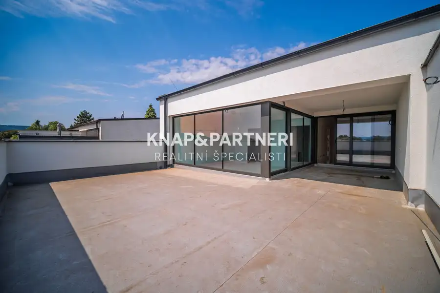
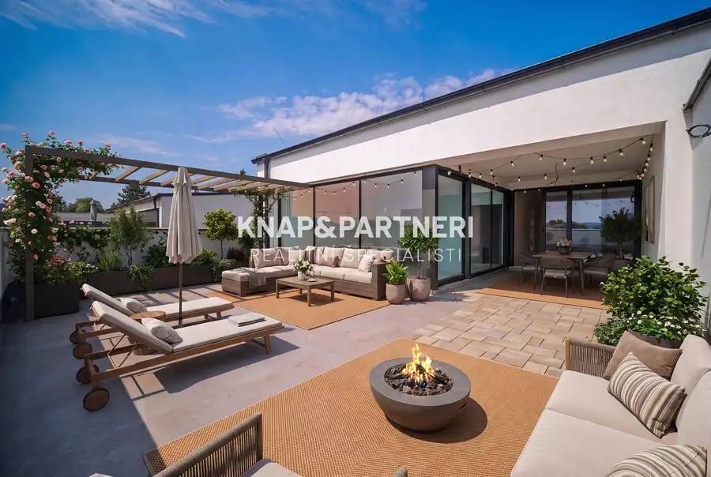
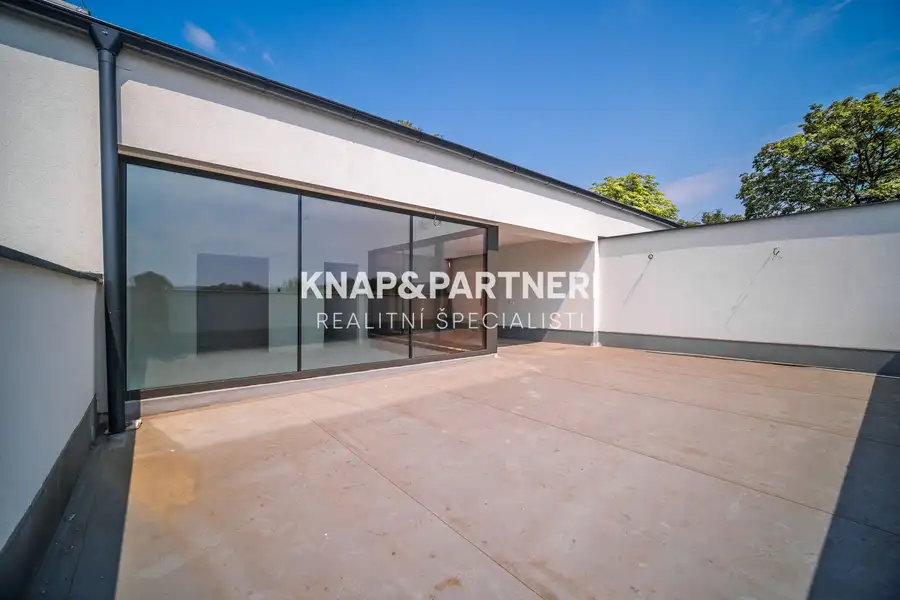
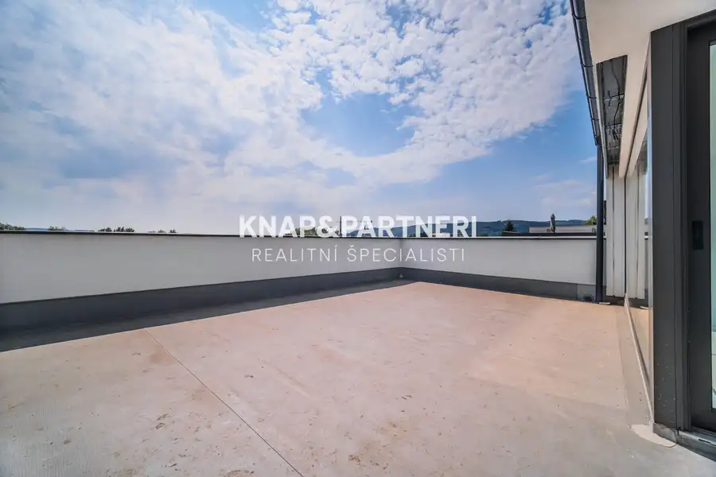
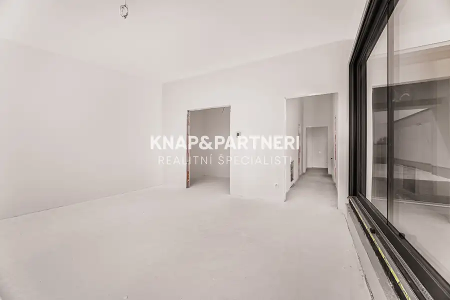
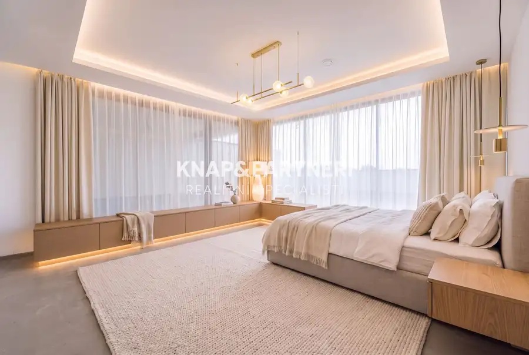
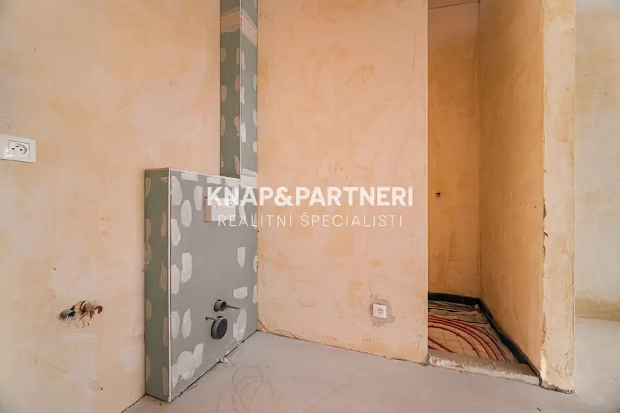

Novostavba, Amfik House, mezonetový 4 izbový byt „d“ s terasami, 274,8 m2, Prešov
Prešov







- Dispozícia4-izbový
- Plocha274.8 m²
- Poschodie3. z 3
- StavNovostavba
- VlastníctvoOsobné
- Energetická triedaG
O nehnuteľnosti
Nadštandardný mezonetový 4 izbový byt na predaj v širšom centre Prešova – moderné a komfortné bývanie pre náročných v developerskom projekte Amfik House!► CELÚ PONUKU BYTOV SI POZRITE NA: https://bit.ly/4nrk6SIPonúkame na predaj exkluzívny mezonetový 4 izbový byt s nadštandardnými parametrami a prémiovými technológiami, ktoré spĺňajú najvyššie požiadavky na pohodlné a moderné bývanie.Základné parametre bytu:Podlahová plocha bytu: 128,62 m² – bohatá výmera, ktorá ponúka dostatok miesta na pohodlné bývanie, rodinné aktivity i pracovný kút. Tento byt poskytuje voľnosť pri zariaďovaní a dostatok priestoru pre každého člena rodiny.Terasy: 96,38 m² a 46 m² (spolu 142,38 m²) – Tento mezonetový 4-izbový byt ponúka dva priestranné vonkajšie priestory, ktoré spoločne vytvárajú celkovú výmeru úžasných 142,38 m².Prvá terasa o rozlohe 96,38 m² je ideálnym miestom na vytvorenie relaxačnej zóny s pohodlným sedením, priestorom na grilovanie alebo spoločenské stretnutia. Vďaka veľkorysej výmere môžete zariadiť aj menší záhradný kútik či herný priestor pre deti.Druhá terasa s rozlohou 46 m² poskytuje ďalší luxusný priestor, ktorý sa dá využiť napríklad na ranné meditácie, čítanie kníh alebo ako súkromné fitko pod holým nebom.Obe terasy spoločne ponúkajú možnosť prepojenia aktívneho životného štýlu s komfortom domova, pričom poskytujú nádherné výhľady a prístup k čerstvému vzduchu. Tieto exteriérové priestory umožňujú užívať si pohodlie a súkromie vo vlastnom modernom prostredí.Pivnica: 3,8 m² – praktický priestor na uloženie športových potrieb, bicyklov či sezónneho vybavenia.2 parkovacie miesta priamo pred bytovým domom – komfortné parkovanie zabezpečené.Cena jedného parkovacieho miesta je 12 500€, cena pivnice je 5 000€.Technologické a ekologické benefity:Energetický štítok A0: Najvyššia energetická trieda, ktorá zaručuje nízke náklady na prevádzku a ekologický prístup.Vykurovanie cez plynový kotol a centrálna rekuperácia: Zdravé a stabilné vnútorné prostredie s čerstvým vzduchom bez zbytočných teplotných strát.Príprava na elektrické vonkajšie rolety a fotovoltaika: Možnosť zníženia nákladov na energie s využitím moderných technológií.Smart riešenia: Ovládanie vykurovania, vonkajších žalúzií a video vrátnik cez mobilnú aplikáciu – maximálne pohodlie na dosah ruky.Vyhotovenie bytu: ŠTANDARDByt môžeme dokončiť do vyhotovenia štandard v sume 81 000€, pričom si môžete vybrať:Podlahy, interiérové dvere, obklady a dlažby z našej kvalitnej ponuky, aby váš nový domov presne odrážal váš štýl.Kúpeľňové zariadenie, ktoré splní vaše estetické aj praktické požiadavky.Cena bytu zahŕňa vyhotovenie štandard, čo vám umožní nasťahovať sa bez dodatočných investícií.Poloha a orientácia:Juhovýchodná orientácia: Byt je presvetlený po celý deň, čo vytvára príjemnú atmosféru a prispieva k zníženiu energetických nákladov.Širšie centrum mesta Prešov: Vynikajúca dostupnosť k obchodom, službám, školám a dopravnej infraštruktúre.Nízke mesačné náklady:Predpokladané mesačné náklady budú iba približne 170 €, vďaka použitým energeticky úsporným technológiám.Bonusy:Výťah v bytovom dome, ktorým sa možno dostať do každého podlažia: Pohodlné bývanie pre všetky vekové kategórie.Veľká terasa s možnosťou vlastného fitka: Luxusný priestor, kde sa budete cítiť ako na dovolenke každý deň.Pivnica a parkovacie miesta: Praktické riešenia na každodenné potreby.Tento nadštandardný byt je ideálnou voľbou pre tých, ktorí hľadajú výnimočné a moderné bývanie s dôrazom na komfort, technológie a kvalitu.Dokončenie stavby je naplánované na Q2 2026, následne prebehne kolaudácia a odovzdanie bytov.Neváhajte nás kontaktovať a dohodnúť si obhliadku tejto unikátnej nehnuteľnosti na 0903 704 937, alebo emailom na knap@knapapartneri.sk► CELÚ PONUKU BYTOV SI POZRITE NA: https://bit.ly/4nrk6SI
Parametre
- Cellar area
- 3.8 m²
- Cena vrátane energií
- Nie
- Druh
- 4 izbový byt
- Dátum zverejnenia
- 05. 12. 2024
- Energetický certifikát budovy
- G
- Plocha terasy v m2
- 142.38 m²
- Podlažie
- 3
- Počet nadzemných podlaží
- 3
- Rok kolaudácie
- 2025
- Stav nehnuteľnosti
- Novostavba
- Telekomunikácie
- Optická sieť
- Typ
- Predaj
- Typ konštrukcie
- Tehlová
- Umiestnenie
- Ďalšie nadzemné podlažie
- Vlastníctvo
- Osobné
- Vybavenie
- Výťah
- Vykurovanie
- Podlahové, Klimatizacia
- Úžitková plocha
- 274.8 m²
Kde to je


Mohlo by Vás zaujímať
 Komerčné priestoryNové
959 000 €Multifunkčná hala v priemyselnej zóne, strojnícka, Prešov - nižná Šebastová
Prešov
1099 m²
Komerčné priestoryNové
959 000 €Multifunkčná hala v priemyselnej zóne, strojnícka, Prešov - nižná Šebastová
Prešov
1099 m²
 BytNové
355 000 €Novostavba, Amfik House, mezonetový 4 izbový byt „c“ s terasami, 217,58 m2, Prešov
Prešov
4-izbový217.58 m²2. podlažie
BytNové
355 000 €Novostavba, Amfik House, mezonetový 4 izbový byt „c“ s terasami, 217,58 m2, Prešov
Prešov
4-izbový217.58 m²2. podlažie
 DomNové
245 500 €Novostavba v radovej zástavbe v obci Záborské: dom a
Záborské
98.97 m²
DomNové
245 500 €Novostavba v radovej zástavbe v obci Záborské: dom a
Záborské
98.97 m²